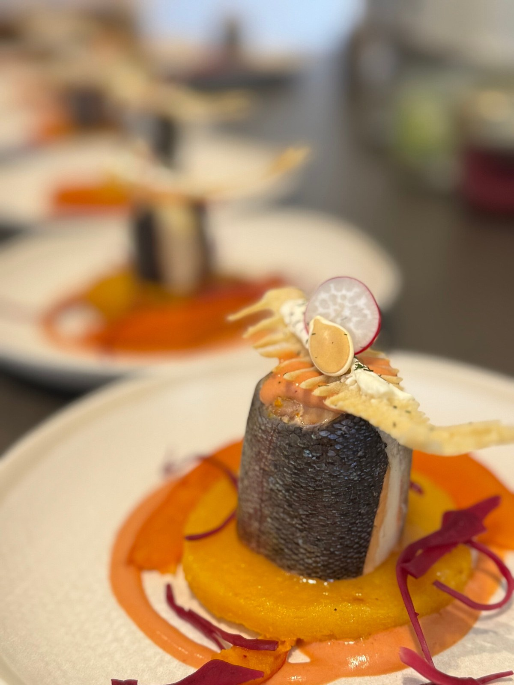
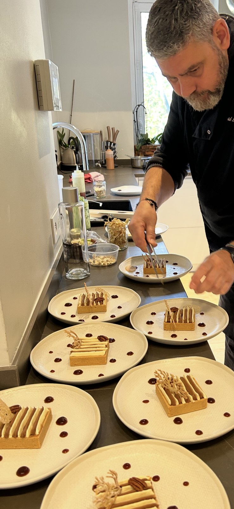
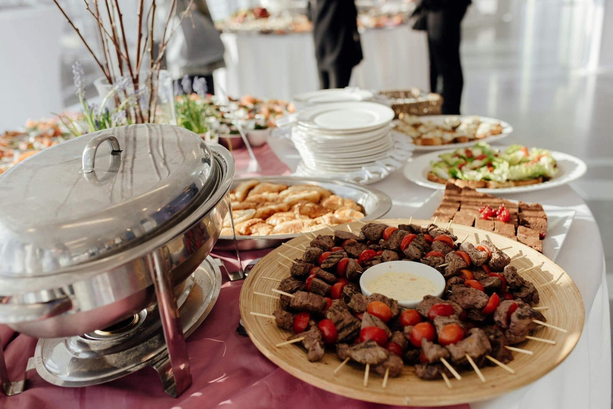
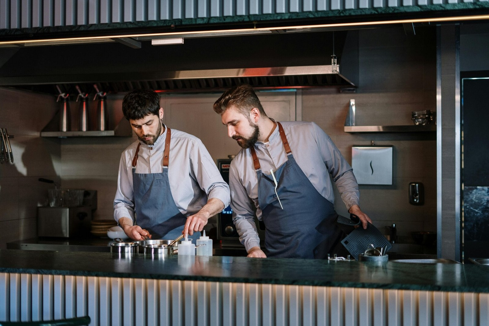
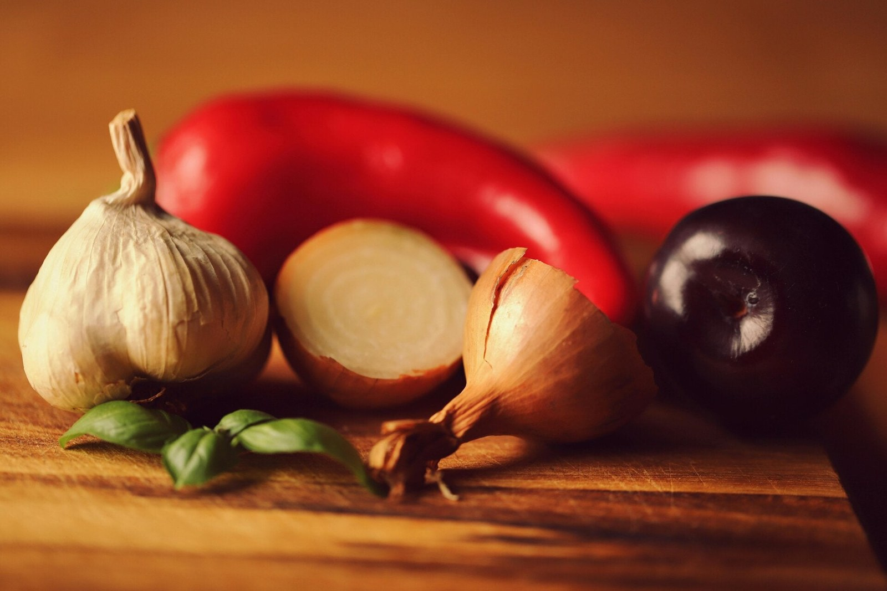
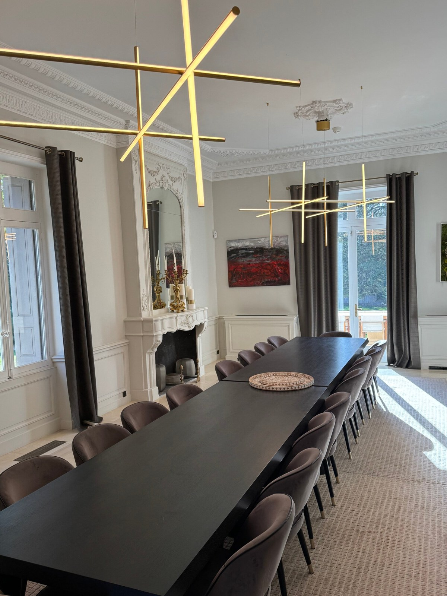

DAVID GUEZET · LA PART DU CHEF
Notre cuisine provençale

L'art culinaire à votre porte
Bienvenue chez David Guezet chef privé, où la passion de la cuisine rencontre l'excellence du service. Fort de 30 ans d'expérience, nous vous offrons une expérience culinaire unique, mettant en valeur les saveurs provençales avec des produits locaux et de saison. Que ce soit pour un mariage, un anniversaire ou un simple dîner entre amis, laissez-nous sublimer vos événements. Découvrez notre univers et laissez-vous séduire par une cuisine authentique et raffinée.
Nos services
David vous propose une gamme complète de services culinaires, adaptés à vos besoins et à vos envies. De la création de menus sur mesure à la réalisation de plats d'exception, nous mettons notre savoir-faire à votre service pour des moments inoubliables.

Chef privé à domicile
Profitez d'un chef expérimenté directement chez vous pour des repas personnalisés et des occasions spéciales. Savourez une cuisine raffinée sans les contraintes de la préparation.

Traiteur événementiel
Nous créons des expériences culinaires sur mesure pour vos événements : mariages, anniversaires, réceptions... Une cuisine créative et savoureuse pour vos invités.
Consulting restauration
Bénéficiez de notre expertise pour optimiser votre restaurant : création de cartes, formation du personnel, amélioration des processus... Atteignez l'excellence en restauration.


Cuisine provençale
Découvrez les saveurs authentiques de la Provence à travers des plats élaborés avec des produits frais et locaux. Une cuisine ensoleillée et pleine de goût.
"Un chef exceptionnel ! Sa cuisine provençale a enchanté nos papilles. Nous recommandons David à tous ceux qui recherchent une expérience culinaire inoubliable."
Sophie et Mickael.G

Contact
Isle sur la Sorgue, France
Horaires de disponibilité
Du lundi au vendredi : 9h - 21h
Contact
Réseaux sociaux
Partager Partager Partager Épingler Partager Facebook Instagram TikTok LinkedIn